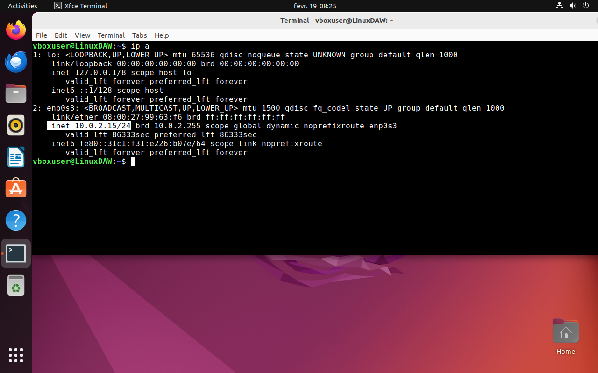
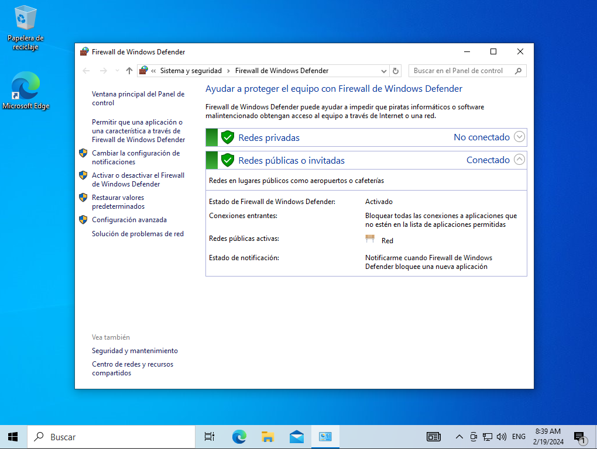
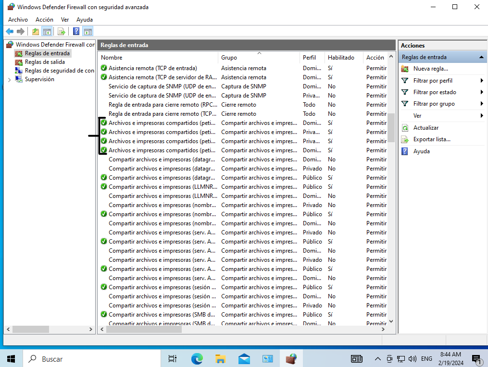
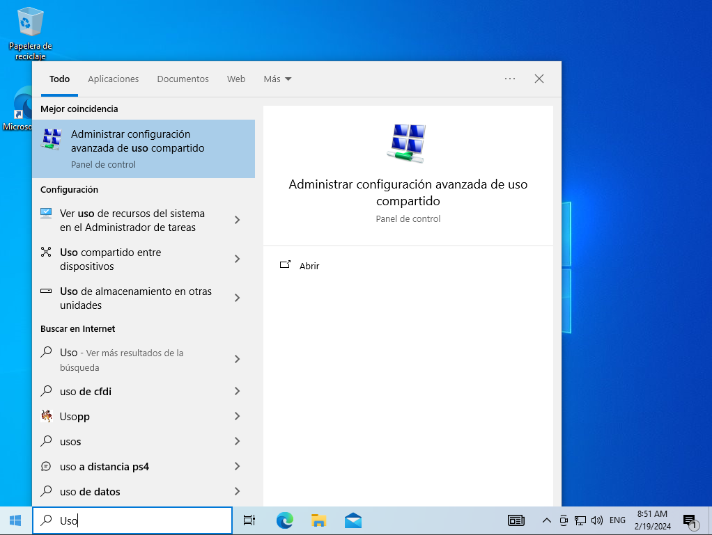
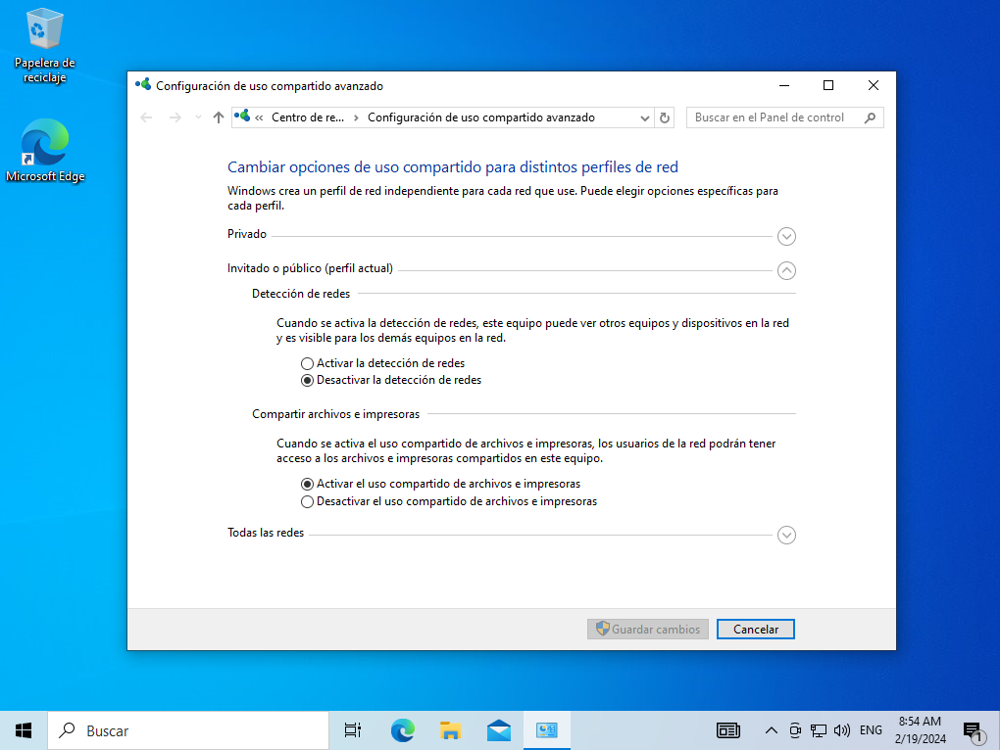
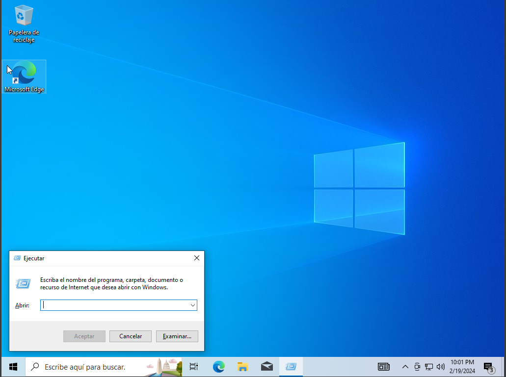
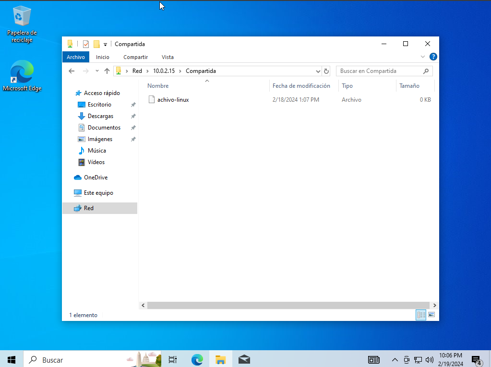

HOW TO Virtualizacion y uso de Samba.
Paso 4:Saber la Ip y pasar archivo entre SO
Ahora ya con la carpeta creada y con permisos creadas en Linux, el siguiente paso será saber la Ip de la maquina para poder enviar archivos. Con el comando "ip a" o "ipconfig" se nos mostrará la ocnfiguración base de nuestra máquina.
Despues abrimos la maquina de Windows y para poder compartir datos, tenemos que configurar algunos permisos predeterminados
Entre ello vamos a configurar el firewall y habilitar las regals de "Archivos e impresoras de uso compartidos"
Vamos paso a paso, lo primero será hacer click en el boton de Inicio (abajo a la izquierda con el icono de Windows) y en la ventana buscar escribimos "Firewall" y le damos click "Firewall de Windows Defender"
Se abrirá una ventana, en ella buscamos el apartado "Configuración avanzada", le damos un click y s abrira otra pestaña
Hacemos click en "Reglas de entrada" y buscamos los archivos "Archivos e impresoras compartidos", deberia haber mas de uno con el mismo nombre y todos tiene que estar aceptado(Icono Correcto a la izquierda), debe aparecer como la foto.
Ya con el Firewall bien administrado, cerramos las pestaña y volvemos darle click al boton de Inicio y esta vez escribimos "Uso compartido" y le damos click en "Administrar configuracion avanzada de uso compartido"
En la pestaña que se ha abierto le damos un click en el boton de "Activar detección de redes" y tambien en "Activar el uso compartido de archivos e impresoras"
El ultimo paso volvemos a dar click al boton de inicio y escribimos "Ejecutar", se abrira una pequeña pestaña
Escribimos la Direcion IP de Linux y se abrirá la carpeta que se ha creado en la maquina Linux, añadimos las credenciales que nos pida y podremos compartir datos desde distintas máquinas.
